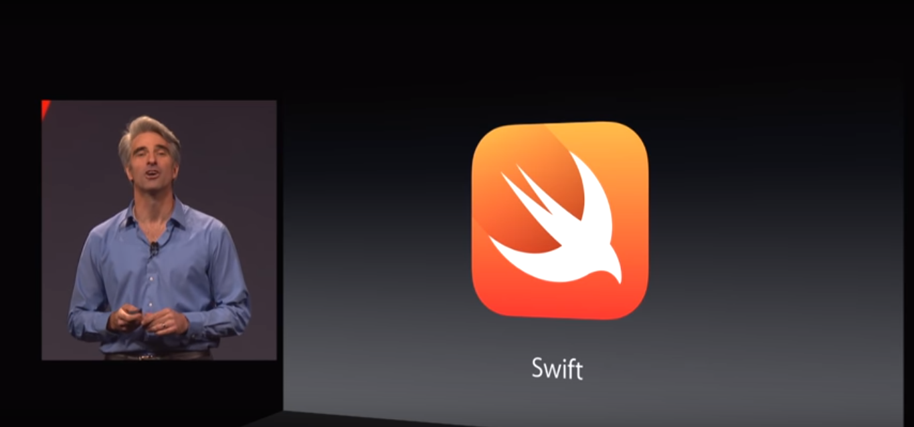
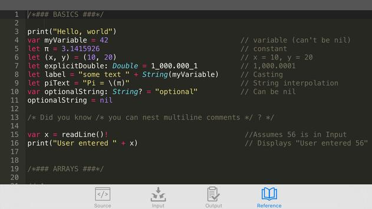
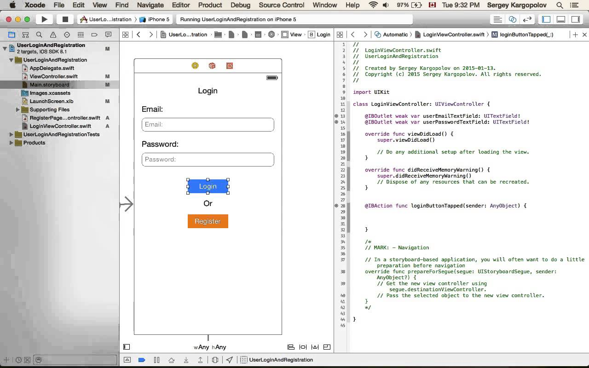

.png)

.png)
Four years ago, at the WWDC14 keynote Apple made a move that took the developer community by storm. They released Swift as a new programming language.
Most people expected only small updates to Objective-C. Instead, Apple decided to create a completely new and better programming language: Swift and Objective-C code are meant to work together to make the move easier. Within 3 years of the big announcement, Swift acheived the top 10 most popular programming languages.

Chris Lattner was the head developer behind Swift. He began the project during his time as a research assistant and student at the University of Illinois. His main goal was to build a powerfull and intuitive language that was open source and free for all. He planned on finishing the project before he graduated but it was far from being ready at that time. So he left the university and set out to look for a place to work on the project, in the process he is hired at Apple and is given full creative liberty to bring the language to production quality.
The language brought modern syntax and useful language features that weren’t available in C such as closures, structs, enums and tuples, etc. The beta was made available only to registered developers at the conference since there were still many bugs to resolve before widespread release. To the left is some code from version 1.0, quite different from what it is today (Right)!


Ever since swift was released it has always been changing for the better. The biggest change was about a year after its initial release, and Swift 2.0 was announced, at WWDC15. December 2015, Swift 2.2 was made open source. This was a very smart move on Apples part since it gave a huge boost to the evolution of the programming language due to the increased amount of people that were able to access it.
Next Steps
After Chris Lattner left Apple to go to Tesla last year the lead role was shifted to Ted Kremenek. Apple wants Swift to be the next big language like C and C++ and they wont stop until it acheives that goal. With the release of Swift 3 and 4 the audience has only gotten bigger, who knows what may be in store for Swift 5?